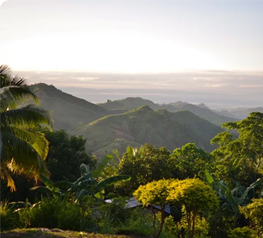
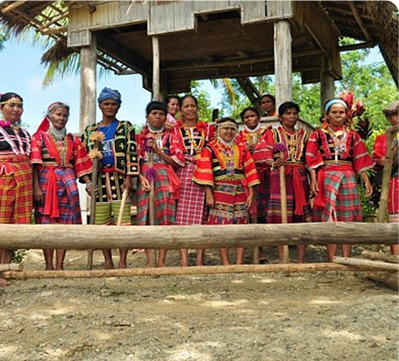
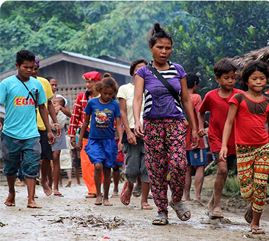
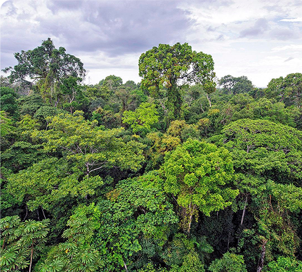

MUNICIPALITY OF TALAINGOD
Talaingod: The Last Frontier of Davao del Norte
A Land of Untamed Wilderness, Indigenous Heritage, and Natural Wonders Talaingod, the youngest and least urbanized municipality in Davao del Norte, is a hidden gem known for its pristine forests, towering mountains, and rich indigenous culture. Home to the Ata-Manobo tribe, the municipality is one of Mindanao’s last ecological frontiers, where traditions remain intact, and the land remains largely untouched. With its vast timberlands, abundant wildlife, and eco-tourism potential, Talaingod is a destination for those seeking adventure, cultural immersion, and a deeper connection with nature.

Geography & Area
A Land of Mountains, Rivers, and Dense Forests
Spanning 915 Square Kilometers of Untouched Beauty Talaingod covers 915 square kilometers, making it one of the largest municipalities in Davao del Norte in terms of land area. The town is dominated by rugged mountains, deep river valleys, and virgin forests, providing a sanctuary for diverse wildlife and a rich biodiversity hotspot. It is traversed by the Libuganon River and its tributaries, which sustain agriculture, fishing, and traditional livelihoods.

Brief History
A Land Rooted in Indigenous Strength and Identity
Honoring the Ata-Manobo’s Deep Connection to the Land Talaingod was officially established in 1991, making it the youngest municipality in Davao del Norte. However, its history dates back centuries as the ancestral homeland of the Ata-Manobo people, who have thrived in the forests and river valleys for generations. Recognized for their resilience and self-sufficiency, the Ata-Manobo continue to preserve their customs, traditions, and way of life, despite modernization slowly reaching their lands.

Demographics & Language
A Stronghold of Indigenous Culture and Traditions
Where the Ata-Manobo Language and Way of Life Endure Talaingod is home to a predominantly Ata-Manobo population, with many still speaking the Ata-Manobo language in their daily lives. Cebuano (Bisaya), Tagalog, and English are also spoken, particularly in schools and government offices, but the indigenous language remains a vital part of the town’s identity.

Climate & Environment
A Biodiversity Haven with Pristine Rainforests
Protecting One of Mindanao’s Last Remaining Forests Talaingod has a tropical rainforest climate, with heavy rainfall supporting its lush vegetation and dense forests. Due to its ecological significance, conservation efforts focus on preserving wildlife habitats, protecting water sources, and preventing illegal logging, ensuring that the municipality’s natural beauty remains intact.
Reference: davaodelnorte-talaingod